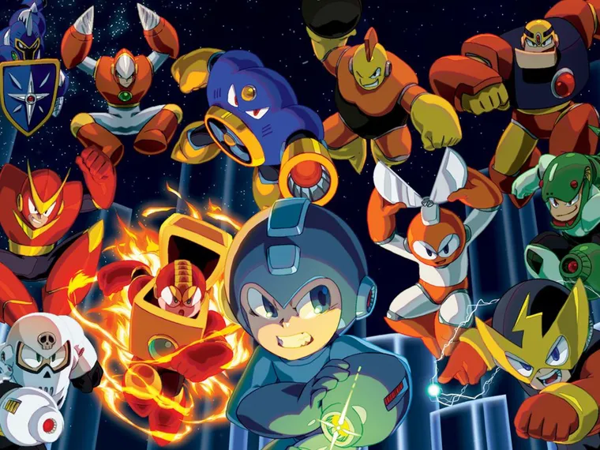

Mega Man (a veces referido como MM), conocido en Japón como la Serie de Rockman, es una franquicia de videojuegos realizada por Capcom, protagonizada por el héroe robot del mismo nombre, Mega Man -o una de sus contrapartes. La saga está compuesta por más de cincuenta títulos, por lo que es la franquicia más prolífica de Capcom. Al 31 de diciembre de 2010, la franquicia ha vendido aproximadamente veinte y nueve millones de copias en todo el mundo.[1] Los videojuegos de Mega Man comenzaron en 1987 con el primer título de Mega Man lanzado para la Nintendo Entertainment System. Este videojuego y sus secuelas comprenden la saga original, que desde entonces ha sido seguido por varios "spin-off" en el mismo universo ficticio, universos alternos o futuros alternos, todo referido como EL UNIVERSO MEGA MAN. Dentro de un año, en 2017 Mega Man cumplirá 30 años de su debut.

Mega Man, conocido en Japón como Rockman, originalmente construido bajo el nombre de Rock, apodado como "El Bombardero Azul" y el "Mega Man Original", es el protagonista de la Saga Clásica de Mega Man de la franquicia de videojuegos Mega Man desarrollada por Capcom desde 1987. El diseño original de Mega Man fue creado por Akira Kitamura y re-elaborado por Keiji Inafune. Siendo desde entonces, la mascota de la compañía y uno de los iconos más reconocidos de la industria de los videojuegos. Originalmente, siendo exclusivo de la consola Nintendo Entertainment System, Mega Man ha evolucionado cubriendo casi todas las consolas existentes hasta la actualidad. El principal rol de Mega Man se centra en su eterna batalla para detener al malvado científico loco, el Dr. Wily, y su cada día más creciente ejército de robots y parar su ambición de conquistar al mundo, gracias a su voluntad y buenas intenciones. Utilizando su arma principal, el Mega Buster, un brazo-cañón que se puede adaptar a las Armas Especiales de los Robot Masters que derrota, mientras viaja alrededor del mundo con tal objetivo. Con la constante ayuda de su "padre", el Dr. Light y sus compañeros robóticos, Mega Man lucha por la victoria y conseguir su principal objetivo, "LA PAZ ETERNA".
Mega Man X, o conocido como Rockman X en Japón, comunmente llamado solo "X", es el protagonista y personaje principal de la saga de videojuegos de Mega Man X, que surgió como un spin-off de la Saga Clásica de Mega Man. También ha hecho otras apariciones como en su papel de guía en la saga de Mega Man Zero y como el Modelo X en la saga de Mega Man ZX. Él es el sucesor de Mega Man y la mejor y ultima creación del Doctor Thomas Xavier Light. Durante la Saga X, X es un Maverick Hunter quien pelea al lado de su mejor amigo, Zero y a partir de MX8, su compañero Axl con el objetivo de mantener la paz y estabilidad en el mundo protegiendo a los humanos y Reploids de los Mavericks y su líder Sigma. Aún así, si X tuviera la oportunidad preferiría evitar las peleas. Debido a su aversión a la violencia, X es clasificado inicialmente como un Hunter de Rango B, aunque eventualmente es promovido al Rango S. X es el primer robot que posee la suficiente tecnología sofisticada y conducta adaptable, basado en el último diseño del Dr. Light. El Dr. Cain el cientifico que lo encontró, jamás fue capaz de analizar completamente los sistemas operativos e internos de X. Dejando eso de lado, Cain fue capaz de replicar la estructura de X, haciendo de X sea el precursor de la 1ra Generación de Reploids. Haciendolo conocido como "El Padre de Todo", haciendo referencia a todo lo relacionado a los Reploid. Aunque popularmente no sea reconocido como tal, como sucede con Zero, aunque deberia considerarsele un "Robot Master", es conocido normalmente como un Reploid, debido a que el término es relativo a todo robot que pueda razonar como un humano.
Albert W. Wily, mayormente referenciado como Dr. Wily, es un infame "científico loco" de la era 20XX, especializado en el campo de la robótica, era el antiguo colega del Dr. Light, pero su genio siempre fue opacado por los logros del "Padre de la Robótica". Debido a ello, el Dr. Wily se ha convertido en el mayor enemigo/peligro del Dr. Light, esto a causa que su malvado genio ha sido capaz de re-programar, crear y diseñar robots que lo sigan en su máximo sueño, la Conquista del Mundo. El Dr. Wily es reconocido por ser el creador de varios Robot Masters, entre los que destacan Bass, Treble, Reague, etc. todos con el único objetivo de eliminar/destruir a Mega Man. Aún así, todos sus planes siempre se ven truncados por la intervención del Bombardero Azul. El mayor legado del Dr. Wily a las generaciones futuras es su maldad, comprimida en el Virus Sigma de la era 21XX, que se originó en su mayor creación, el robot Zero. Todos sus malévolos inventos tienen un gran distintivo, una gran "W" que utiliza como logo.
Sigma, una vez conocido como "Comandante Sigma", es el villano principal de La Saga de Mega Man X. Asi mismo, sirve como el Jefe Final en casi toda la totalidad de La Saga X, excepto en Mega Man X: Command Mission (donde Sigma no aparece) y Mega Man X8 (donde él es el penúltimo Jefe, pero en Modo Fácil si lo es). Como el primer Reploid creado por el Dr. Cain, Sigma fue considerado el mejor de los Reploids y fue el primer líder de los Maverick Hunters; manteniendo la paz entre los Reploids y los humanos al arrestar y cazar Mavericks. A pesar de que una vez fue un prudente y confiable seguidor de la paz, Sigma inesperadamente se vuelve un Maverick antes de los eventos en Mega Man X y se rebela contra la humanidad, asumiendo el papel del líder de los Mavericks. Bajo el mando de Sigma, los Mavericks se convierten en una legión dedicada a la exterminación de la raza humana. A pesar de que ha sido destruido en innumerables ocasiones, la programación de Sigma siempre sobrevive y se construye a sí mismo un nuevo cuerpo, listo para amenazar al mundo una vez más. Se supone que se vuelve más peligroso y vengativo con cada transformación. Sus enemigos principales son X, Zero y, más recientemente, Axl; manteniendo una rivalidad-neutral-alianza con Vile.
Mega Man, conocido en Japón como Rockman, fue el primer videojuego de Mega Man. Fue desarrollado por Capcom en 1987, co-creado por Akira Kitamura y Keiji Inafune, siendo estrenado en la consola Famicom de Nintendo el 17 de Diciembre 1987 en Japón, siendo localizado en América del Norte en diciembre de 1987, y en Europa en mayo de 1989 para Nintendo Entertainment System. Mega Man fue concebido como un proyecto de Capcom para abrirse las puertas en las consolas hogareñas. Su éxito fue tal que todos los cartuchos se vendieron en tan sólo 3 días en Japón.
Mega Man 2, conocido en Japón como Rockman 2: Dr. Wily no Nazo, fue el segundo videojuego de Mega Man. Fue desarrollado por Capcom en 1988, co-creado por Akira Kitamura y Keiji Inafune. Se estrenó para la consola Famicom de Nintendo el 24 de diciembre de 1988, alcanzando fama internacional; luego, se localiza en Occidente en julio de 1989 en la Nintendo Entertainment System. A la fecha, Keiji Inafune sigue considerando a Mega Man 2 como el más memorable de toda la franquicia, así mismo, es el favorito de los fans.
Mega Man 3, conocido en Japón como Rockman 3: Dr. Wily no Saigo, es el tercer videojuego de Mega Man. Fue desarrollado por Capcom en 1990, co-creado por Keiji Inafune, siendo lanzado para la consola Nintendo Famicom el 28 de Septiembre de 1990; se localiza en Occidente en Noviembre de ese mismo año en la Nintendo Entertainment System. Mega Man 3 es un videojuego resaltante, debido a que introdujo a varios personajes clásicos como Rush, y Proto Man, además del movimiento de Barrida.
Mega Man 4, conocido en Japón como Rockman 4: Aratanaru Yabou!!, es el cuarto videojuego de la línea principal de Mega Man. Fue desarrollado por Capcom en 1991, con la dirección de Tokuro Fujiwara y Keiji Inafune, estrenado para la consola Famicom de Nintendo el 6 de Diciembre de 1991; siendo localizado en Occidente para Nintendo Entertainment System en 1992. Mega Man 4 fue aclamado por la crítica de principios de los 90, pero en la actualidad, ha sido relegado como la representación del declive de calidad que se había instituido en los tres primeros títulos. Asimismo, añadió la innovadora mecánica del "New Mega Buster".